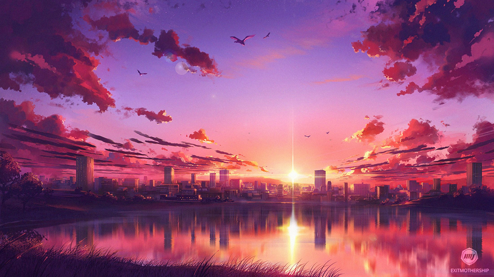

Origins and Evolution
Artistic Style and Themes
Cultural Impact
Major Contributions and Icons
Future of Anime
PICTURE ANIME


FINALY
Japanese anime is a rich and dynamic aspect of Japan's cultural heritage. Its unique blend of artistic style, diverse themes, and global influence ensures that anime will continue to be a beloved and integral part of the entertainment world for years to come. And if you want to know more click here.